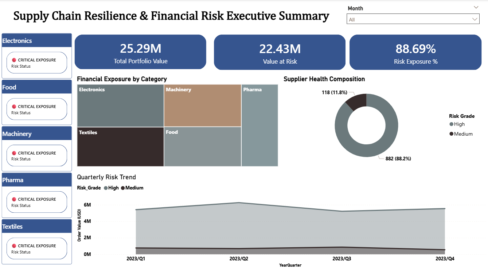
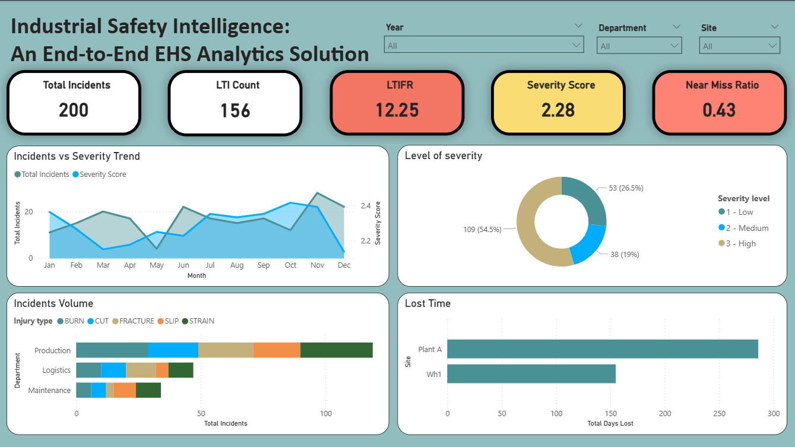

Data Analyst — Business Performance & Operational Risk
I turn messy operational data into decisions. My path here wasn't linear — I hold a degree in Environmental & Occupational Health, which gave me a strong academic grounding in risk, compliance frameworks, and how organisations measure what matters for safety and operations.
Circumstances kept me close to home for several years after graduating, but as things opened up, I made a deliberate choice: rather than starting over, I built on what I already knew. Over the past year I taught myself SQL, Python, Power BI, and statistical modelling — and the result is an analyst who understands why the numbers matter, not just how to process them. That domain grounding is something most self-taught analysts simply don't have.
I also run a small retail business — which means I've lived the reality of making decisions from incomplete data. That perspective shapes how I frame every analysis: not as an exercise, but as something a real person needs to act on.
Supply Chain Risk Analysis
Volatility index · VaR dashboard · Supplier segmentation
Built a statistical supplier volatility index using standard deviation of lead times to classify suppliers into High / Medium / Low risk categories. Identified 88.69% of procurement value exposed to high-volatility suppliers and developed an executive Power BI dashboard tracking Value at Risk (VaR), exposure concentration, and supplier health — enabling leadership to prioritise renegotiation and diversification strategies.

Click to expandEHS Safety Intelligence System
LTIFR · Compliance monitoring · Role-based dashboards
Designed an end-to-end EHS analytics system integrating incident logs, audit records, and training data into a unified risk-monitoring platform. Built safety-critical KPIs including LTIFR, severity scoring, near-miss rate, and training compliance — with both lagging and leading indicators to enable proactive safety management. Role-based Power BI dashboards serve Executives, EHS Managers, and Plant Managers with tailored views.

Click to expandSupporting projects
Conducted after the EHS project was completed
A structured SQL EDA across the three EHS source tables — incidents, audits, and training — conducted after the dashboard was already built. The analysis revealed data quality issues including mixed value formats, logic contradictions (a score of 92 marked FAIL, near-miss records with injury types), and cross-table mismatches that affect the accuracy of the current dashboard. Findings are documented openly as a learning milestone — it reinforced why EDA must come before modelling, not after.
Data cleaning & BI-ready preparation. Feature engineering for profit margin and time-series analysis.
Revenue vs target variance, profit & margin tracking, MoM growth and seasonal pattern identification.
Time-series risk monitoring, peak-period detection, vaccination impact on mortality & ICU trends.
EHS, supply chain, and retail operations — I speak the language of the business, not just the data. My EOH degree gives my analysis domain grounding that most self-taught analysts simply don't have.
Raw data → schema design → cleaning → KPIs → dashboard. No handoffs needed for small-to-mid analytics workloads.
Every project starts with a business question, not a dataset. Outputs are structured for decisions, not exploration.
Rebuilt my career through structured self-study — SQL, Python, Power BI, and statistical modelling — while running a business simultaneously.
Let's work together
Open to data analyst roles in operations, risk, supply chain, or EHS — remote or hybrid